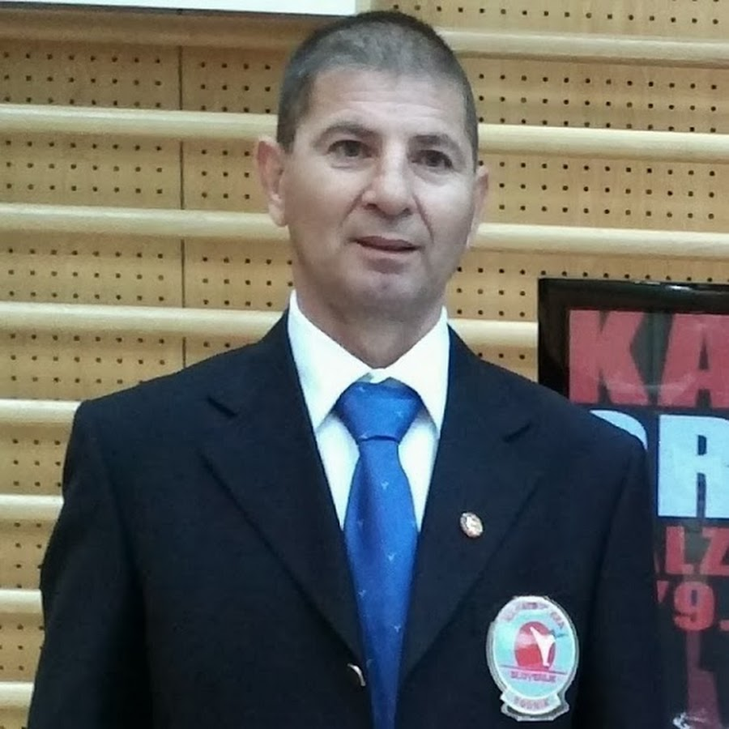
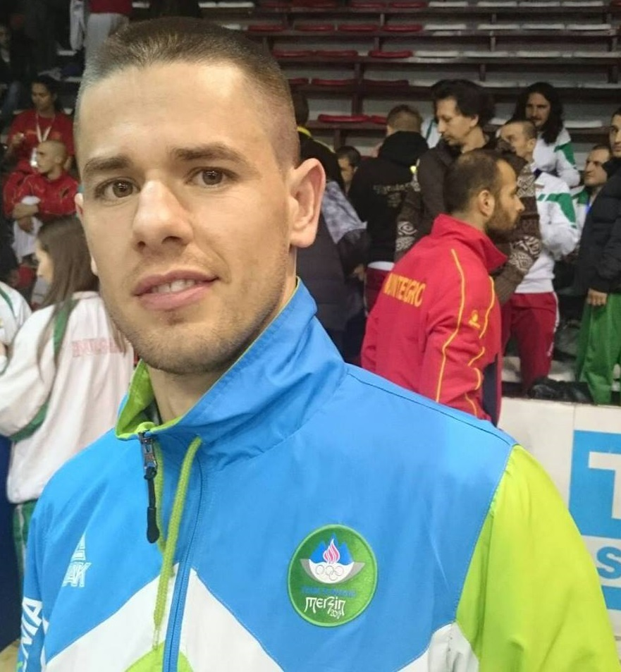

Karate Klub Piran
Karate Klub Koper
Club di Karate Capodistria
Prade - cesta X/008
6000 Koper - Slovenija
GSM: 040/643-460 >>> Mladen Railić
e-mail: karatekoper@gmail.com
Matična št.: 23410000
Davčna št.: 14032384
TRR: S156 1010-0004-4577-412 pri BANKI KOPER
Treningi: Sreda: 18h05 do 19h30 O.Š. Dušana Bordona - Koper Petek: 18h05 do 19h30 O.Š. Dušana Bordona - Koper.
O Klubu
Karate klub Koper je bil ustanovljen 16.12.2007 v Kopru na pobudo takratnega predsednika in glavnega trenerja kluba Marjana Mijatovića (mojster karateja 2.DAN). Na izredni skupščini, ki je bila 20.11.2010, je za novega predsednika bil izvoljen Mladen Railić (mojster karateja 2.DAN in vaditelj karateja), ki je prav tako postal glavni trener kluba. Novi predsednik je absolvent Fakultete za šport in še aktivni tekmovalec v Karate Zvezi Slovenije (KZS) pri kateri je že vrsto let tudi reprezentant. Osvajal je številne medalje tako v Sloveniji, kot tudi v tujini. Med njimi so najboljši rezultati: 11-kratni državni prvak Slovenije v različnih kategorijah, 5.mesto na Svetovnem prvenstvu za ekipo Slovenije, 3.mesto na Balkanskem prvenstvu posamezno. Na pobudo novega predsednika je bila podana prošnja na KZS za sprejem v članstvo. Karate klub Koper je bil sprejet v polnopravno članstvo na 3. redni skupščini KZS-ja, dne 23.12.2010. S tem so pridobili pravico vsi tekmovalci kluba, da nastopajo na tekmovanjih, ki jih organizira KZS v sodelovanju z WKF-om (Svetovno karate federacijo). Omenjena federacija je najštevilčnejša na Svetu v primeru števil držav, društev, klubov in tekmovalcev. Trener kluba je poleg Mladena še Milenko Railić (mojster karateja 6.DAN, Diplomirani karate trener). Milenko je ustvaril veliko uspešnih rezultatov v času svoje tekmovalne kariere. Poleg tega je zelo uspešen karate trener, ki je oblikoval številne uspešne karateiste, ki so se tekmovali za Slovensko reprezentanco in tudi osvajali mednarodna odličja. Do sedaj je vsak njegov tekmovalec ob njegovem vodstvu dosegel vsaj medaljo na državnem nivoju, kjer je danes velika konkurenca, saj imamo v Sloveniji vedno več karateistov z Evropskimi in Svetovnimi odličji.
Nameni in cilji kluba so:
skrbeti za množičnost in popularizacijo karate veščine med občani, predvsem med mladino ter jih po njihovi prostovoljni odločitvi pritegniti v članstvo,
skrbeti za kvaliteto vrhunskih karateistov ter si prizadevati za dvig kvalitete le teh;
skrbeti za kvaliteto vrhunskih karateistov ter si prizadevati za dvig kvalitete le teh;
spodbujati strokovno izpopolnjevanje članov kluba in se zavzemati za štipendiranje in
Član kluba lahko postane vsak, ki se ukvarja s karatejem ali je kako drugače pri svojem delu povezan s tem področjem. Članstvo v klubu je prostovoljno. Kdor želi postati član kluba mora upravnemu odboru predložiti pristopno izjavo, v kateri izrazi željo postati član kluba, se zaveže, da bo deloval v skladu s statutom kluba in plačal članarino.
Član kluba lahko postane pod enakimi pogoji tudi tuj državljan.
Kaj je karate?
Karate je vzhodnoazijska borilna veščina, katere ime ima dvojno vlogo. Po eni strani gre za borilno veščino z otočja Okinava, razvito proti koncu 19. stoletja z združevanjem tradicionalnih okinavskih metod goloroke borbe. Po drugi strani pa se izraz karate danes, predvsem izven azijskega prostora, najpogosteje uporablja kot splošni izraz za veliko število modernih borilnih veščin, ki so se razvile na Japonskem od začetkov 20. stoletja dalje pod neposrednim vplivom okinavskega Karateja.
Katera področja ključuje?
- stave, udarce in blokade z rokami in nogami, ki predstavljajo osnove ali t. i. kihon,
- gibanje po določenih vzorcih, t. i. kate,
- nadzorovano borbo oziroma t. i. kumite.
Trenerji:
|  |  |
| MILENKO RAIDLIĆ | MLADEN RAILIĆ |